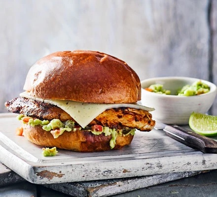

Mexican Chicken Burger
Ready in under 20 minutes, this burger with spiced chipotle chicken breast,
in toasted brioche with guacamole, makes for a satisfying weeknight treat for one
- Prep: 10 mins
- Cook: 8 mins
- Easy
- Serves 1
Ingredients
- 1 chicken breast
- 1 tsp chipotle paste
- 1 lime, juiced
- 1-2 slices cheese
- 1 brioche bun, split
- ½ avocado
- 2 cherry tomatoes, chopped
- 3-4 pickled jalapeño slices, chopped
- ½ small garlic clove, finely grated
Steps
- Put the chicken breast between two pieces of cling film and bash with a rolling pin
or pan to about 1cm thick. Mix the chipotle paste with half the lime juice and spread
over the chicken.
- Heat a griddle pan over a high heat. Once hot, cook the chicken for 3 mins each side
until cooked through, adding the cheese for the final 2 mins of cooking. Add the bun,
cut-side down, to the griddle pan to toast lightly. Season the chicken.
- Meanwhile, mash the avocado with the remaining lime juice. Stir in the cherry tomatoes,
jalapeño and garlic, and season with a little salt. Spread over the base of the bun, then
add the chicken followed by the top of the bun.